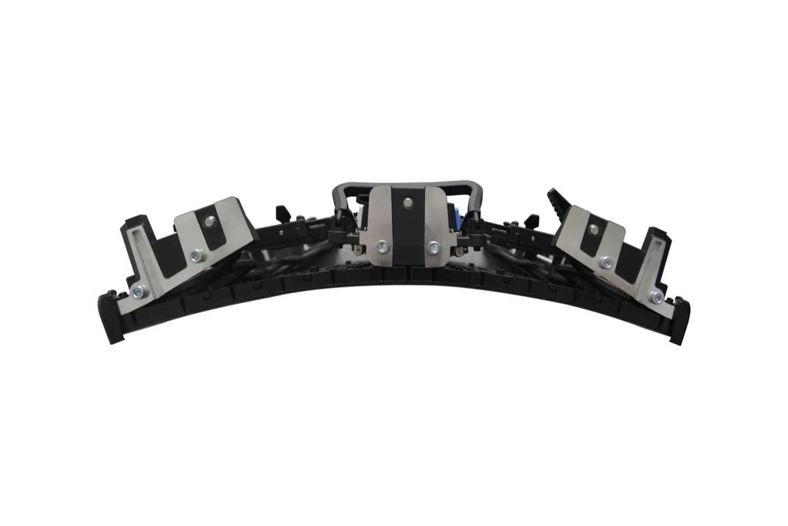
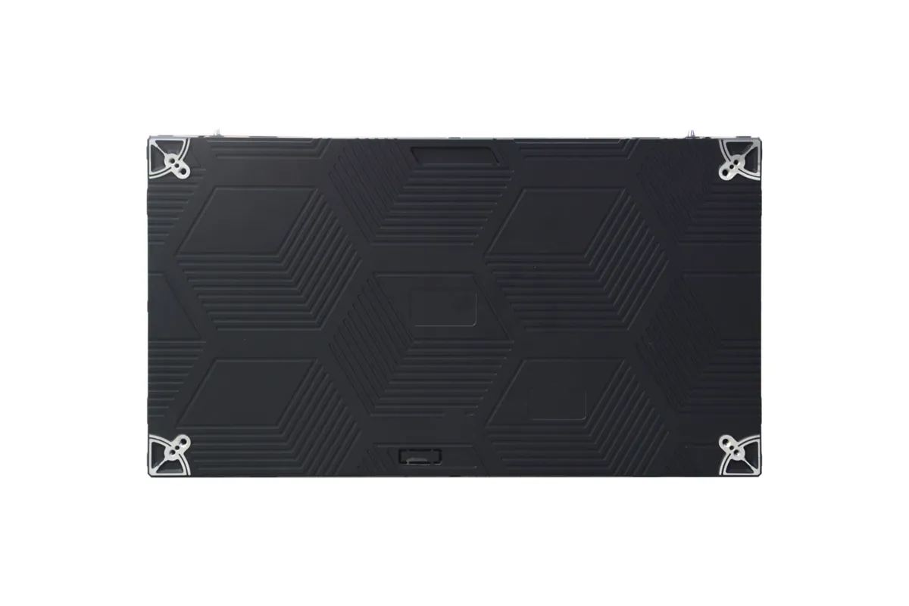

A large indoor fixed LED wall shows its seams most on solid colour fields, close to the screen. Indoor fire-rated LED display, SAP Garden Munich case (Asia Vision case library).
Visible Seams Between LED Cabinets: Causes, Fixes and What to Specify
2026-11-16Asia VisionTechnical Guide
What is an LED video wall seam? A seam is any visible line, step or colour band at the joint between two LED cabinets or two modules. It can be a bright line, a dark line, a physical gap, an edge that sits proud of its neighbour, or a patch of slightly different colour. Seams are the first thing a buyer notices on a solid colour field, a white slide or a pale sky, and they are one of the most common complaints on a finished wall.
This guide is for AV integrators, rental companies and facility owners who see lines between cabinets and need to know whether the cause is mechanical, electrical or optical, what can be fixed on site, and what to write into the specification so that it does not happen. It sits next to the tolerance specification guide, which covers tolerance writing in general, and the 90-degree corner article, which covers corner joints only. This page is about straight-line seams on flat and curved walls: how to read them, fix them and prevent them.
Four Kinds of Seam, and What Each Usually Means
Treat the symptom first. Each type of seam points to a different cause and a different first check.
What you see
Likely cause
First check
Dark line between cabinets
Physical gap, or edge pixels dimmer than the rest of the cabinet
Look at the joint from the side with a light behind the wall; check the lock tension
Bright line between cabinets
Cabinets pushed tight so the edge pixels sit closer than the pitch, or brighter edge pixels
Measure the pixel-to-pixel distance across the joint against the pitch
Step or shadow at the joint
One cabinet sits forward or back of its neighbour; the structure is not flat
Lay a straightedge across the face; check the support structure
Colour or brightness block with a clean edge
Different production batches, ageing or calibration data
Check batch labels and calibration files for the cabinets either side
A dark line and a bright line can come from the same joint at different viewing angles. A step catches light and throws a shadow, which the eye reads as a line even when the pixels are in perfect register. Always inspect a seam from the position where the audience sits, not only from straight on.
Why a Finer Pixel Pitch Does Not Remove Seams
A common assumption is that a finer pitch hides seams. It does the opposite when the joint is poor. A coarse pitch spreads the picture so widely that a gap of a fraction of a millimetre is a small part of the pixel spacing. On a fine pitch such as P0.9375 or P1.25, the same gap is a larger share of the pixel spacing, and a viewer sitting close to the wall sees it. Mechanical precision at the cabinet edge matters more as pitch gets finer and viewing distance gets shorter. The viewing distance guide explains how to set the closest viewing position that the wall has to survive.
The pitch is also the target for the joint: ideally the distance from the last pixel on one cabinet to the first pixel on the next is the same as the pitch inside a cabinet. A smaller distance shows as a bright line, a larger one as a dark line.
A fixed indoor wall should be checked with solid colour and test patterns from the real seating or walking positions. Indoor fine-pitch LED canvas, Beijing corporate showroom (Asia Vision case library).
Mechanical Causes: Where Most Seams Start
Most visible seams are mechanical, and most mechanical seams are made during installation rather than in the factory.
Manufacturing tolerance. No set of cabinets is dimensionally identical. Small differences in each cabinet add up across a long row, which is why the cabinet tolerance and the build sequence both matter.
Structure that is not flat. A steel frame that is out of plumb, a wall that bows, or a truss that deflects as cabinets are added moves the cabinet faces out of line. The weight of the screen itself can deflect the frame as the wall grows.
Locks that are loose, damaged or over-tightened. Quick-lock hardware aligns neighbouring cabinets only when it is fully engaged and undamaged. Debris in a connection or a bent latch leaves a cabinet slightly out of position.
Installation sequence. Building from a fixed reference line and checking each row before moving on controls how tolerance accumulates. Random order lets the error build up in one corner.
Temperature and movement. Aluminium cabinets expand and contract. Outdoor walls with large day-night swings, and any wall on a structure that moves, can show seams that were not there on the day of commissioning.
Quick-lock hardware at the rear of a COB ZH rental cabinet. The lock aligns and pulls neighbouring cabinets together; a bent or half-engaged lock leaves a seam (Asia Vision product photo).
Optical and Electrical Causes
When the cabinets are straight and tight and a line is still visible, the cause is in the pixels.
Edge pixel brightness. The pixels at a cabinet edge can differ slightly from those in the centre, so a line appears even when the joint is mechanically perfect.
Batch and binning differences. LEDs from different production lots, or modules built months apart, differ slightly in brightness and colour. The seam shows where two batches meet. See the colour uniformity and batch matching guide.
Ageing. A replaced module that is new next to modules that have run for thousands of hours can look like a patch with a seam around it.
Viewing angle and surface. A glossy or reflective surface shows a joint differently from a matte one, and off-axis viewing exaggerates edge differences.
The Asia Vision specification sheets list single-point brightness correction as available, standard or optional depending on the series; that is correction at the pixel level and is the foundation for good uniformity, but it is not the same as a seam-correction procedure for a cabinet edge.
How to Fix Seams on Site, in the Right Order
Fix the structure first. Check that the frame is level, plumb and flat before touching a single setting. Software cannot compensate for a bowed wall.
Re-seat and adjust the locks. Open the joint, clear any debris, check every latch, and re-engage. Follow the manufacturer's torque and adjustment guidance; over-tightening can damage the adjustment mechanism.
Replace damaged edge modules or hardware. A chipped corner, a bent bracket or a damaged connector will keep reappearing as a seam.
Re-check the calibration. Confirm that each cabinet has the right correction file and that replaced modules have been calibrated to match.
Use controller seam correction as the last step. Some systems let an operator brighten dark seams or dim bright seams along a cabinet edge, using a white test pattern, so slight mechanical misalignment is visually hidden. Leyard's public installation guide for its TWA series describes the process and says it can take 5 to 30 minutes per cabinet; Brompton documents a similar edge-brightness feature. Confirm whether your control platform supports it and who performs and pays for it before commissioning.
The order matters. Seam correction applied to a crooked wall is a patch that has to be redone after the next knock. The mechanical joint should be as good as it can be before any brightness is adjusted.

Curved locking hardware lets cabinets join at a small angle. On an arc, joint quality depends on the lock setting as well as the cabinet. EH-PRO outdoor COB product photo (Asia Vision).
How to Check a Wall at Commissioning
Do not accept a wall because it looks good on a showreel. Inspect it with test patterns from the audience position.
Full white, mid-grey and a pale blue or green field, which show seams and batch blocks most clearly.
Full red, green and blue, one at a time, to show colour blocks.
A dark grey field, which shows edge pixels that are too dim or too bright at low levels.
A fine grid or line pattern across the joints, which shows steps, gaps and misregistration.
Viewing from the closest and farthest positions and at the widest side angle that the audience will use.
Photograph each pattern, record the cabinet positions of any visible seam, and agree in the acceptance document which patterns and distances are used to judge pass or fail. The commissioning and acceptance guide covers how to write that test into the contract.

Rear of a CV-PRO 600 × 337.5 mm die-cast cabinet. A large module and a thin cabinet put fewer joints and a more accurate edge across the wall (Asia Vision product photo).
What Asia Vision Publishes About Cabinet Precision
The published facts are specific, and some are missing.
CV-PRO. The CV-PRO specification sheet describes an ultra-thin die-cast aluminium cabinet of 600 × 337.5 mm with a splicing precision of ≤0.1 mm, and 150 × 337.5 mm modules arranged four across to reduce horizontal seams and improve flatness. See the COB CV-PRO page.
EH-PRO and EF. The specification sheets describe a die-cast aluminium bottom shell for higher splicing flatness and optional right-angle splicing; the EH-PRO sheet also describes a large magnetic screw with an automatic suction function for the cabinet connection. See COB EH-PRO and COB EF.
R-PRO. The R-PRO sheet describes a 640 × 480 mm die-cast cabinet with good splicing flatness and right-angle splicing. See R-PRO.
Rental series. The rental specification sheets list quick-lock cabinet connections; the COB ZH and EH-PRO sheets describe optional ±7.5° arc splicing.
Case library. One outdoor rental backdrop project is described with a ±0.02 mm cabinet tolerance for seamless splicing.
The specification sheets do not publish a maximum gap in millimetres, a flatness tolerance in millimetres, or a seam-correction procedure for every series. The ±0.02 mm figure is a project description, not a column in the product sheet. Ask which tolerance applies to your series, how it is measured, and whether it is guaranteed on delivery. Do not assume the ≤0.1 mm CV-PRO precision applies to other series.
What to Put in the RFQ
Suggested RFQ wording: "The bidder shall state the cabinet-to-cabinet joint tolerance (gap and step) of the proposed series in millimetres and the method used to measure it. The wall shall be accepted when, at the closest specified viewing distance and under the agreed test patterns (white, mid-grey, primary colours and dark grey), no seam is visible between cabinets. The bidder shall state whether edge-brightness seam correction is supported by the proposed control system, who performs it, and whether it is included in the price. Spare modules shall be from the same production batch as the wall."
Add the closest viewing distance, the structure drawing and its flatness tolerance, and whether the wall is flat or curved. Product pages publish a 3-year warranty and 18-day standard factory dispatch; leave time for a seam inspection and any correction before the handover date.
FAQ
Q: Why can I see lines between my LED cabinets?
A: Most visible lines come from a physical gap, a step between cabinets, edge pixels that are brighter or dimmer than the rest, or a batch or calibration difference. Check the structure and locks first, then the calibration, then use controller seam correction if the system supports it.
Q: Does a finer pixel pitch hide LED seams?
A: No. A finer pitch makes a given gap a larger share of the pixel spacing, so mechanical precision matters more, and viewers sit closer. A fine pitch with a poor joint shows seams more clearly.
Q: Can LED seams be fixed in software?
A: Slight brightness lines can often be hidden with edge-brightness seam correction on systems that support it, using a white test pattern. It does not fix a bowed structure or a damaged lock, and it should be the last step, not the first.
Q: What gap tolerance does Asia Vision guarantee between cabinets?
A: The CV-PRO specification sheet states a splicing precision of ≤0.1 mm for its 600 × 337.5 mm cabinet. The other specification sheets describe flatness and splicing design but do not publish a gap tolerance in millimetres. Ask for the tolerance and measurement method for your series in writing.
Q: How do I check for seams before accepting a wall?
A: Show white, mid-grey, primary colours, dark grey and a fine grid on the wall and inspect from the closest and farthest viewing positions and the widest side angle. Photograph each pattern and record the cabinet positions of any seam in the acceptance document.
Asia Vision case library: SAP Garden Munich, Beijing corporate showroom and outdoor event backdrop (±0.02 mm cabinet tolerance as stated in the case description).
Leyard / Planar TWA Series LED Video Wall Installation Guide (seam correction process and time per cabinet). Brompton Technology, OSCA seam controls. Show Tech LED video wall glossary (bezel and seam). Public reference pages used for research notes, not for Asia Vision product claims.
Seeing seams on a current wall, or writing a cabinet tolerance into a new RFQ? Send the pitch, the closest viewing distance and the structure drawing, and we will reply with the cabinet data and what can be confirmed in writing. Start a project enquiry.